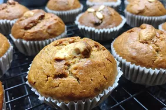

Vegan banana muffins

Moist and yummy vegan banana muffins
Ingredients
- 3 cups flour
- 1 cup sugar
- 2 tsp cinnamon
- 2 tsp baking powder
- 1 tsp salt
- 2 mashed ripe bananas
- 1 cup coconut milk
Steps
- Preheat the oven to 350 degrees F (175 degrees C). Grease 12 muffin cups or line with paper liners.
- Mix flour, sugar, cinnamon, baking powder and salt together in a large bowl. Stir bananas and coconut milk together in a separate bowl; stir banana mixture into flour mixture until just combined. Divide batter among the muffin cups, filling each about 3/4 full.
- Bake in the preheated oven until a toothpick inserted into the center of a muffin comes out clean, 30 to 35 minutes.